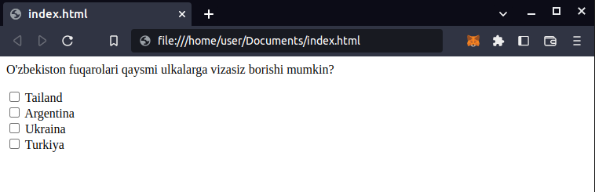

HTML internet tarmog'ining poydevori hisoblanadi. HTML siz uchun
dasturchi bo'lishingizda biringchi qadam bo'lib xizmat qiladi.
HTML ingliz tilida HyperText Markup Language birinchi harflaridan
yasalgan, yani akronim so'zdir. O'zbek tiliga taxminiy tarjimasi
quyidagicha: oshuvchi matn belgili til. HTML so'zining kelib
chiqishi va nima ma'noni anglatishiga xozircha chuqurlashmaymiz.
HTMLni urganish juda oson. HTML elementlardan iborat. Elementlar
teglar yordamida yoziladi.
HTML faylini qanday yaratish mumkin?
HTML faylini yaratish uchun matn muharriri kerak bo'ladi. Agar siz
Windows operatsion tizimidan foydalandsangiz, matn muharriri notepad
deb nomlanadi. Agar sizning operatsion tizimingiz rus tilida bo'lsa
bloknot deb nomlanadi. Agar siz Mac operatsiyon tizimidan
foydalansangiz, matn muharriri TextEdit deb nomlanadi. Matn
muharriri sifatida Sublime Text dan foydalanishingiz ham mumkin.
Keyingi darslarda kod yozish uchun qulay bo'lgan boshqa dasturlar
haqida gaplashamiz, lekin hozircha oddiy matn muharriridan
foydalanamiz.
Gapni cho'zmasdan birinchi vebsahifa yaratishni boshlaymiz.
Matn muharririni oching.
Muharrirga quyidagi matnni yozing:
<h1> Mening birinchi vebsahifam </h1>
File tugmasini bosing, keyin Save as tugmasini bosing
Paydo bo'lgan oynada, faylni saqlash joyini ko'rsating va faylni
index.html nomi bilan saqlang.
Tabriklaymiz! Siz birinchi vebsahifangizni yasadingiz. Endi
saqlagan joyingizdan index.html faylni oching sichqoncha chap
tugmasini ikki marta bosish orqali oching.
Oddiy HTML strukturasi:
HTML fayli, veb sahifaning turli qismlarini aniqlovchi bir qator
teglardan tashkil topadi. HTML faylining asosiy strukturasi
quyidagicha:
<!DOCTYPE html>
<html>
<head>
<title>Sahifaning Sarlavhasi</title>
</head>
<body>
<!-- Sahifaning tarkibi shu yerga yoziladi -->
</body>
</html>
<!DOCTYPE html&> tegi browserga ushbu fayl html ning oxirgi
versiyasi bo'lgan html5 formatidagi fayl ekanligini xabar qiladi.
<html> va </html> birgalikda html elementi deb
nomlanadi. html elementi eng birinchi element hisoblanadi va u
ikkita tegdan iborat. Birinchisi ochuvchi teg <html>,
ikkinchisi yopuvchi teg </html> html teglari html kodining
boshida va oxirida ishlatiladi va butun kodni o'z ichiga urab oladi.
<head> teglari ichida vebsahifaga aloqador qo'shimcha
ma'lumotlar kiriladi va ushbu ma'lumotlar foydalanuvchiga
ko'rinmaydi.
<body> elementi vebsahifaning barcha tarkibini (matn,
gafiklar, rasmlar, havolallar va boshqalar) o'z ichiga oladi.
HTML fayliga tarkib (kontent) kiritish:
HTML fayliga tarkib kiritish uchun, bir qancha teglardan
foydalanishingiz mumkin. Eng ko'p ishlatiladigan teglardan ba'zilari
quyidagilar:
<h1> dan tortib <h6> gacha bo'lgan teglar: Ushbu
teglar sarlavhalar uchun ishlatiladi. <h1> tegi eng asosiy
teg hisoblanadi va u ko'runish jihatidan eng kattasi. <h2>
dan <h6> gacha bo'lgan teglar quyi daraja sarlavhalar uchun
ishlatiladi.
<p>: <p> tegi paragraflar uchun ishlatiladi.
<ul> va <li>: <ul> tegi raqamlanmagan ro'yxat
uchun ishlatiladi, va <li> tegi esa ro'yxatning ichidagi har
bir qatori uchun ishlatiladi.
<ol> va <li>: <ol> tegi raqamlangan ro'yxat
uchun qo'llaniladi va <li> tegi ro'yxatning har bir qatori
ucun ishlatiladi.
<a>: <a> tegi havolalar uchun ishlatiladi.
Quyida bir qancha elementlar qo'llanilgan html fayli misol qilib
keltirilgan:
<!DOCTYPE html>
<html>
<head>
<title>Mening Vebsahifam</title>
</head>
<body>
<h1>Vebsahifamga xush kelibsiz!</h1>
<p>
Bu mening birinchi vebsahifam, e'tiboringiz
uchun raxmat.
</p>
<ul>
<li>Boshiga</li>
<li>Haqida</li>
<li>Aloqa</li>
</ul>
<p>To'liq ma'lumot uchun
<a href="https://www.instagram.com/">Instagram</a>
sahifamga tashrif buyuring!
</p>
</body>
</html>
Yozgan kodingizni validator.w3.org web sahifasida tekshirishingiz
mumkin.
2-chi dars:
HTML <head> elementi
HTMLda head elementi HTMLning miyasi hisoblanadi; u foydalanuvchiga
ko'rinmaydi lekin unda juda muhim ma'lumotlar saqlanadi.
head so'zi ingliz tilidan olingan va o'zbek tilida
bosh degan ma'noni anglatadi.
charset atributi
Meta ma'lumotlar: Meta ma'lumotlar <meta> tegi yordamida
yoziladi. <meta> tegi bir qancha atributlarni o'z ichiga
oladi. Masalan:
charset atributi. Specify the character encoding for the HTML
document: charset atributi html dokumentini kompyuter tiliga qanday
qilib ugirishni belgilaydi. HTML5 yuriqnomasi veb dasturchilarni
UTF-8 ugirish tizimidan foydalanishlarini maslaxat beradi, chunki,
UTF-8 danyodagi qariyb barcha harflar va belgilarni qamrab oladi.
meta tegi ko'pchilik html teglaridan farqli ularoq yopuvchi tegga
ega emas. Quyida keltirilgan misolga qarang:
<!DOCTYPE html>
<html>
<head>
<meta charset="UTF-8">
</head>
<body>
Bu html ning body, ya'ni tana qismi.
</body>
</html>
Muallif va tavsif
veb sahifa muallifi haqida ma'lumot kiritish uchun author va content
atributlaridan foydalaniladi. Quyidagi misolga e'tibor bering:
<!DOCTYPE html>
<html>
<head>
<meta charset="UTF-8">
<meta name="author" content="Alisher Navoiy">
</head>
<body>
Bu html ning body, ya'ni tana qismi.
</body>
</html>
vebsahifaga tavsif berish uchun, ya'ni vebsahifa nima haqida
ekanligi haqida to'liqroq ma'lumot berish uchun name atributi
description ko'rsatgichi bilan va content atributi ko'rsatgichi
urnida vebsahifaga tavsif beriladi. Takror eslatib o'tamiz, ushbu
tavsif vebsahifa foydalanuvchilariga ko'rinmaydi va u faqat
qidiruvchi matorlar uchun kerak bo'ladi. Quyida bunga misol
keltiramiz:
<!DOCTYPE html>
<html>
<head>
<meta charset="UTF-8">
<meta name="author" content="Alisher Navoiy">
<meta name="description" content="Ushbu vebsahifada
dukonimizda soliladigan gullar turlari, ularning
narxlari va etkazib berish xizmatlari haqida ma'lumot
keltirilgan">
</head>
<body>
Bu html ning body, ya'ni tana qismi.
</body>
</html>
Nishon joylashtirish
Nishon, ba'zan logo, yoki logotip deb nomlanuvchi grafik ko'rinishga
ega belgidir. Uni hamma joyda uchratish mumkin. html kodining head
qismida, link atributi yordamida nishonni aynan tab qismida
ko'rinadigan qilib sozlash mumkin. Quyidagi misolga qarang:
<!DOCTYPE html>
<html>
<head>
<link rel="icon" href="nishonbelgisi.png"
type="image/x-icon>
</head>
<body>
Bu html ning body, ya'ni tana qismi.
</body>
</html>
<link> tegiga kursimizning keyingi bosqichida yana qaytamiz.
3-chi dars:
Matnga ishlov berish
Sarlavalar
Vebsahifalar ko'pincha gazetaga o'xshab sarlavga va paragraflardan
iborat bo'ladi. Hajm jihatdan eng katta sarlavha <h1> va
</h1> teglari o'rtasiga yoziladi.
<h1> Sarlavha </h1>
Bundan tashqari <h1> dan kichirroq bo'lgan <h2>,
<h3>, <h4>, <h5>, <h6> sarlavhalari ham
mavjud:
<h1> h1 Sarlavha </h1>
<h2> h2 Sarlavha </h2>
<h3> h3 Sarlavha </h3>
<h4> h4 Sarlavha </h4>
<h5> h5 Sarlavha </h5>
<h6> h6 Sarlavha </h6>
Har bir sahifada 1 dona h1 sarlavha ishlatish maslahat beriladi.
Paragraflar
Paragraflar matnni mazmun juhatdan qismlarga ajratish uchun
ishlatiladi. Paragraf <p> va </p> teglari orasida
yoziladi. Quyida sarlavha va paragrafga misol keltiramiz.
<h1>
O'zbekiston Respublikasining Konstitutsiyasi 2-chi moddasi
</h1>
<p>
Davlat xalq irodasini ifoda etib, uning manfaatlariga
xizmat qiladi. Davlat organlari va mansabdor shaxslar
jamiyat va fuqarolar oldida mas'uldirlar.
</p>
Yuqoridagi kodni .html qo'shimchasi bilan saqlab browser bilan
ochganizda quyidagi ko'rinishga ega bo'ladi.
Quyida h1, h2 va p elementlarini qanday qilib qo'llashga misol
keltirilgan:
<h1>
O'zbekiston Respublikasining Konstitutsiyasi
</h1>
<h2>
2-chi modda
</h2>
<p>
Davlat xalq irodasini ifoda etib, uning manfaatlariga
xizmat qiladi. Davlat organlari va mansabdor shaxslar
jamiyat va fuqarolar oldida mas'uldirlar.
</p>
<h2>
4-chi modda
</h2>
<p>
O'zbekiston Respublikasining davlat tili o'zbek tilidir.
</p>
Yuqoridagi kod browserda quyidagicha ko'rinishga ega bo'ladi:
E'tibor bergan bo'lsangiz, h1 tegi asosiy sarlavha uchun ishlatilgan,
h2 esa quyi darajadagi sarlavha uchun ishlatilgan. Matn esa p, ya'ni
paragraf elementi bilan o'ralgan.
<hr> tegi
<hr> tegi matnni mazmuni jihatdan qismlarga ajratish uchun
ishlatiladi. <hr> tegi gorizontal chiziq ko'rinishida namoyon
bo'ladi. Quyida misolda yuqoridagi kodimizga ikkita gorizontal chiziq
qo'shamiz:
<h1>
O'zbekiston Respublikasining Konstitutsiyasi
</h1>
<hr>
<h2>
2-chi modda
</h2>
<p>
Davlat xalq irodasini ifoda etib, uning manfaatlariga
xizmat qiladi. Davlat organlari va mansabdor shaxslar
jamiyat va fuqarolar oldida mas'uldirlar.
</p>
<hr>
<h2>
4-chi modda
</h2>
<p>
O'zbekiston Respublikasining davlat tili o'zbek tilidir.
</p>
Ushbu kodni browserda ochganimizda quyidagicha ko'rinishga ega bo'lgan
vebsahifa kelib chiqadi.
Ko'rib turganingizdek ikkita gorizontal chiziq paydo bo'ldi.
Bundan tashqari matnda ishlov berishda bo'sh qator qoldirib ketishga
to'g'ri keladi. Buning uchun <br> tegidan foydalaniladi.
<br> tegidan boshqa tegni ichida
<p>
Matnning bir qismi yuqorida <br> ikkinchi qismi esa
pastga tushishi kerak.
</p>
yoki tashqarida foydalanish mumkin.
<p>
Tasavvur qilaylik ushbu matn ma'lum bir sababga ko'ra
ikki qismga bo'lishi kerak. Matnning bir qismi
yuqorida
</p>
<br>
<p>
ikkinchi qismi esa pastga
tushishi kerak.
</p>
<br> tegi <hr> tegi kabi yopuvchi tegga ega emas.
<em> va <strong> teglari bilan matnga urg'u berish
matnga yoki matnning bit qismiga urg'u berish uchun uni <em> va
</em> teglari orasi joylash kerak. Urg'u berilgan matn italik,
ya'ni kursiv ko'rinish oladi. Matnni yoki matnning bir qismini qalin
matnga aylantirish uchun esa uni <strong> va </strong>
teglari orasiga o'rash kerak. Masalan:
<p>
Dasturchilarga <strong> dunyo </strong>bo'ylab talab katta.
Dasturchi bo'lish <em> qunt va mashaqqat </em> talab
qiladi.
</p>
Yuqorida misolda dunyo so'zi qalinlashgan, qunt va mashaqqat so'zlari
esa italik, ya'ni kursiv ko'rinishga ega.
<strong> tegi matnni muhimliligini belgilaydi va matnni
qalinlashtiradi.
Agar faqatgina matnni qalinlashtirish kerak bo'lsa, uni <b> va
</b> teglari orasiga olinishi kerak.
em, strong va b elementlari qator-ichi elementlari hisoblanadi. Bu
nima degani? Qator ichi elementlari qator ichiga joylashadi va blok
elementlardan farqli ularoq yangi qatorga ko'chmaydi. Bu haqda keyingi
darslarda yana chuqurroq urganamiz.
Matnda boshida yoki ichida bir yoki bir nechta katak joy tashlab
ketish uchun ishlatiladi.
html teglarini yozishda kichikroq < va kattaroq > belgilari
ishlatiladi. Ammo ushbu belgilar browserga teglarni matndan farqlay
olishi uchun ishlatiladi. Ammo kattaroq va kichikroq belgisini browser
ko'rsata oladigan qilish uchun quyidagi koddan foydalaniladi:
< kichikroq, (<)
> kattaroq. (>)
<abbr> tegi va title hossasi yordamida qisqartma so'zlarning
to'liq shaklini suzib chiquvchi oynada ko'rinadigan qilish mumkin.
<address> elementi yordamida vebsaytga manzil haqida ma'lumot
kiritiladi. Masalan siz restoran vebsaytini yaratmoqchi bo'lsangiz,
restoranning joylashgan manzilini <address> va </address>
elementlari orasiga joylashtirish kerak bo'ladi.
HTML kodida izoh qoldirish uchun o'sha izohni <!-- va -->
belgilari orasida qoldirish kerak. Browser siz yozgan izohni
foydalanuvchiga ko'rsatmaydi, ammo, bu izoh siz uchun yoki siz bilan
birga ishlayotgan boshqa dasturchi uchun foydali bo'lishi mumkin.
4-chi dars: HTML kodida izoh yozish.
Izoh asosiy mavzuga oid qo'shimcha ma'lumot hisoblanadi. Ko'pchilik
ijtimoiy tarmoqlarda izoh qoldirgan va uning nimaligini biladi.
HTMlda izoh kod ichida yoziladi va u faqat dasturchilarga ko'rinadi.
HTML kodida izoh qoldirish uchun o'sha izohni <!-- va -->
belgilari orasida qoldirish kerak. Browser siz yozgan izohni
foydalanuvchiga ko'rsatmaydi, ammo, bu izoh siz uchun yoki siz bilan
birga ishlayotgan boshqa dasturchi uchun foydali bo'lishi mumkin.
5-chi dars:
Ro'yxatlar
Raqamlangan ro'yxat
Raqamlangan ro'yxat quyidagicha yoziladi:
<p>Kredit olish uchun kerak bo'lgan hujjatlar:</p>
<ol>
<li>Mahalladan ma'lumotnoma</li>
<li>Ish joyidan ma'lumotnoma</li>
<li>Nikoh guvohnomasi</li>
<li>Soliqdan qarzi yo'qligi haqida hujjat</li>
<li>Gazdan qarzi yo'qligi haqida hujjat</li>
<li>Elektr energiyasidan qarzi yo'qligi haqida hujjat</li>
<li>Oshnalardan qarzi yo'qligi haqida guvohnoma</li>
</ol>
Raqamlanmagan ro'yxat
Raqamlanmagan ro'yxatning moddalari, ya'ni qatorlari oldidan raqam
bo'lmaydi. Raqam o'rnida doira shakli ifodalanadi. Raqamlanmagan
ro'yxat xuddi raqamlangan ro'yxat kabi yoziladi, faqat <ol>
o'rniga <ul> yoziladi. Masalan:
<p>Pishirig'imizga kerak bo'ladigan masalliqlar ro'yxati:</p>
<ul>
<li>300 gram un </li>
<li>200 gram suv</li>
<li>1 dona tuxum</li>
<li>Xamirturish</li>
<li>Kartoshka 2 dona</li>
<li>yog', yarim litr</li>
</ul>
Ko'rib turganingizdek raqamlangan va raqamlanmagan ro'yxatlar
avtomatik tarzda chap tarafdan joy qoldirgan holda yoziladi.
Tavsifli ro'yxat
Tavsifli ro'yxat ingliz tilida description list deyidi va u
<dl> tegi yordamida yoziladi. Misol tariqasida yuqorida
keltirilgan raqamlanmagan ro'yxatni tavsifli ro'yxatga aylantiramiz:
<p>Pishirig'imizga kerak bo'ladigan masalliqlar ro'yxati:</p>
<dl>
<dt>Oliy nav bug'doy uni</dt>
<dd>300 gram </dd>
<dt>Qaynatilib sovutilgan suv</dt>
<dd>200 gram yoki 3 piyola </dd>
<dt>Tovuq tuxumi</dt>
<dd>1 dona katta yoki 2 ta kichik </dd>
<dt>Quruq xamirturish</dt>
<dd>5 gram yoki yarim choy qoshig'ida </dd>
<dt>Kartoshka</dt>
<dd>2 dona, o'rtacha</dd>
<dt>O'simlik yog'i</dt>
<dd>500 gram</dd>
</dl>
Yuqoridagi misolda ko'rib turganingiz kabi tavsifli ro'yxatlar
qatorlar qo'shaloq <dt> va <dd> teglari bilan keladi.
6-chi dars:
Havolalar
Mutlaq manzil (Absolute reference)
HTML qisqartmasining birinchi ikkita harfi ingliz tilida hyper text
(HT) o'zbek tilida oshuvchi matn ya'ni havolani anglatadi.
Foydalanuvchini boshqa manzilga oshiradi, ya'ni o'tkazadi. Oddiy
matndan farqli ularoq, havolali matn ustiga sichqoncha
ko'rsatgichini keltirib chap tugmasini bosganimizda havola ishga
tushadi. Havola ko'pincha sizni boshqa vebsahifaga olib boradi, yoki
boshqa sahifani yangi oynada ochadi. Ushbu darsimizda havola
yaratishni urganamiz.
Havola <a> tegi yordamida yasaladi. Masalan siz
vebsahifangizda ijtimoiy tarmoqdagi sahifalaringizga havola
yasamoqchisiz. Bu quyidagicha yasaladi:
<p>
Bu mening
<a href="www.facebook.com/profilingizmoni">facebook</a>
dagi sahifam:
</p>
Ushbu kodni browserda ochganimizda quyidagicha ko'rinishga ega
bo'ladi:
Yuqoridagi misolda ko'rib turganingiz kabi havola rangi avtomatik
tarzda siyoh rangga o'zgardi. Bunga sabab browser havolali matnni
oddiy matndan ajralib turishini ta'minlaydi.
Havola ustiga sichqoncha tugmasi bosilganda, browser havola rangini
ko'k rangga o'zgartiradi. Bu ham, foydalanuchilarga qulaylik
tug'dirish maqsadida, ya'ni tugma bosilgan havolalarni tugma
bosilmagan havolalardan ajralib turishini belgilaydi. Havola
ranglarini istalgan rangga o'zgartirish mumkin, ammo buni
kursimizning keyingi bosqichida, ya'ni css qismida urganamiz.
Yuqorida kodda kiritilgan manzil to'liq manzil yoki mutlaq manzil
deyiladi.
Nisbiy manzil (Relative reference)
Agar havolaga qilib bog'lanadigan fayl, vebsahifamiz fayli bilan bir
joyda joylashgan bo'lsa href hossasi quyidagicha yoziladi.
<p>
Ramsni ko'rish uchun
<a href="rasm.jpg">tugmani</a>
bosing
</p>
Bu nisbiy manzil deyiladi, ingliz tilida relative reference
deyiladi, relativ referens deb o'qiladi.
href hossasiga
Ikkita vebsahifangizni bir biriga havola orqali bog'lash uchun
quyidagicha ko'rinishda kod yozishingiz kerak:
<p>
Bizga murojot qilishni barcha yo'llarini ko'rish uchun
<a href="aloqa.html">aloq qismiga o'tish</a>
ni maslahat berlamiz.
</p>
Agar aloqa.html fayli sizda hali mavjud bo'lmasa, unda index.html
joylashgan papkada yangi fayl yarating va uni haqida.html deb
nomlang. Siz endi haqida.html faylini mustaqil yarata olasiz va
buning uchun shu kungacha urgangan bilimlaringizdan foydalaning.
Ichki manzil (Internal reference)
Ichki manzil havolalari skrol turgmasini pastga tormasdan,
vebsahifaing istalgan qismiga tez yetib borish uchun qo'llaniladi.
Ichki manzil havolasini qo'llashdan oldin, ikkita html tegi bilan
tanishib chiqamiz.
Birinchisi bu <nav> elementi. nav ingliz tilida navigation
degan so'zning qisqartmasidir. navigation navigeyshn deb o'qiladi va
o'zbek tilida yo'l-yo'riq degan ma'noni anglatadi.
<nav> va </nav> teglari ichida asosan menyu tugmalari
joylashtiriladi.
Ikkinchi elementimiz bu <article> elementi. article so'zi
inglizcha bo'lib sekshn deb o'qiladi va o'zbek tilida ma'nosi bo'lim
yoki bob.
<article> tegi vebsahifangizni bo'limlarga bo'lish uchun
ishlatiladi. Masalan:
Yuqoridagi kodda 1 ta nav elementi va 3 ta article elementi yasaldi.
Endi nav elementi ichiga uchta banddan iborat raqamlanmagan ro'yxat
tayyorlaymiz va article elementiga id hosssini qo'shamiz. id hossasi
element boshqa ayni turdagi elementlardan ajralib turishi uchun
ishlatiladi va elementga alohida belgi beradi. Masalan:
<nav>
<ul>
<li> Men haqimda </li>
<li> Qilgan ishlarim </li>
<li> Men bilan bog'lanish </li>
</ul>
</nav>
<article id="menHaqimda"> </article>
<article id="qilganIshlarim"> </article>
<article id="boglanish"> </article>
Endigi bosqichda har bir article elementni ma'lumotlar bilan
to'ldiramiz. Biz quyida misol tariqasida 2 qator matn qo'shamiz ammo
siz ekraningiz to'lguncha matn kiriting, shunki ushandagina siz
ichki manzil qanday ishlashini tushunib olasiz.
So'ngra li elementlari ichidagi matnlarni a elementlari bilan
o'raymiz. a elementning href hossasini article elementining id
hossasi bilan bog'laymiz. Quyidagi misolga qarang.
<nav>
<ul>
<li>
<a href="#menHaqimda">Men haqimda</a>
</li>
<li>
<a href="#menHaqimda">Qilgan ishlarim</a>
</li>
<li>
<a href="#menHaqimda">Men bilan bog'lanish</a>
</li>
</ul>
</nav>
<article id="menHaqimda">
Ushbu qismga o'zingiz haqingizda ma'lumot kiriting.
Yoki vebsahifangiz shirkat haqida bo'lsa shirkat
haqida ma'lumot kiriting.
</article>
<article id="qilganIshlarim">
Bu bi'limda erishgan yutuqlaringiz haqida ma'lumot
kiriting, yoki boshqa istalgan malumot kiriting.
Qanday ma'lumot kiritish siz yaratayotgan vebshifa
turiga bog'liq.
</article>
<article id="boglanish">
Bu bo'limda bog'lanish usullari ya'ni aloqaga
chiqish yo'llari haqida ma'lumot kiriting,
masalan telefon raqami, email manzil va hokazolar.
</article>
Agar vebsahifa so'ngida vebsahifa boshiga olib boruvchi ichki
manzilli havola yaratmoqchi bo'lsangiz, unda vebsahifa so'ngida
yaratilgan a elementining href hossasiga # (hashtag) belgisini
o'zini yozish kifoya.
Agar foydalanuvchi yuklab olishi kerak bo'lgan faylga havola
sozlamoqchi bo'lsangiz, unda a elementining ichida download
hossasini yozish kerak.
Agar foydalanuvchi havolaga bosganda telefon qilish uchun qo'shimcha
oyna ochilishini istasangiz, u quyidagicha yoziladi.
<p> Qo'shimcha ma'lumot uchun bizga
<a href="tel:+998123456789"> qo'ng'iroq qiling </a>
</p>
Agar havola yangi oynada ochilishi kerak bo'lsa unda <a> tegi
ichida target hossasini _blank ko'rsatgichga belgilash kerak
bo'ladi.
7-chi dars:
Tasvirlar
<img> tegi va src hossasi
Shu vaqtgacha biz faqat matn bilan ishladik. HTMLda media fayllardan
ham foydalanish mumkin. Tasvirlar media fayllarning bir turi
hisoblanadi.
Tasvirlar img elementi yordamida vebsahifaga
joylashtiriladi. img elementi ingliz tilidagi image degan so'zning
qisqartirilgan shaklidir. Image, imej deb o'qiladi va uning o'zbek
tilida tarjimasi tasvir bo'ladi.
img elementi faqat <img> tegi bilan yoziladi va yopuvchi tegga
ega emas. Ba'zan yopuvchi tegga ega bo'lmagan elementlarni
quyidagicha yozilganini ko'rishingiz mumkin. Masalan img elementi:
<img/> Buni ko'rib xaytron bo'lmang, ikkalasi ham to'g'ri
hisoblanadi. Lekin xozircha bunga chuqurlashib ketmaymiz. Shunchaki
bunday teglarni ko'rganda xayron bo'lmang degan maqsadda ochiqlik
kiritildi.
Agar vebsahifangizda bitta emas bir nechta rasmlardan foydalanmoqchi
bo'lsangiz, ularni alohida papkaga joylashingizni maslahat beramiz.
Deylik papkani tasvirlar deb nomladingiz. Unda tasvirlarni
vebsahifangizga quyidagicha joylashingiz mumkin:
<p>
Bizning eng so'nggi maxsulotimiz
</p>
<img src="tasvirlar/rasm.jpg">
yuqoridagi misolda ko'rib turganigizdek, img elementini tasvirlar
papkangizdagi rasm.jpg fayli bilan bog'lash uchun
src hossasidan foylanildi. src ingliz tilida source
so'zining qisqargan shakli bo'lib o'zbek tilida manba degan ma'noni
anglatadi. source so'zi sours deb o'qiladi.
Tasvir fayli mahalliy bo'lanligi uchun yuqoridagi misolda nisbiy
manzildan foydalanildi.
alt va title hossalari
img elementining alt hossasiga matn biriktiriladi va ushbu matn
tasvir biron-bir sababga ko'ra ko'rinmaganda, tasvir o'rnida
ko'rinadi. alt hossasiga biriktiriladigan matn qo'shtirnoq ("") yoki
yakkatirnoq ('') ichida yoziladi va tenglik (=) belgisi bilan
biriktiriladi. Masalan:
<p>
Bu mening mushugim
</p>
<img src="tasvirlar/mushuk.jpg" alt="Mushuk rasmi">
alt hossasiga biriktirilgan matnning yana bir foydali tarafi bor.
Ba'zida ko'rlar ekran o'quvchisidan foydalanishadi va vebsahifalarni
eshitishadi. Shunday hollarda browser avtomatik tarzda tasvir
o'rnida alt hossasiga biriktirilgan matnni o'qiydi.
title hossasi ham alt hossasi kabi yoziladi va unga matn
biriktiriladi. Biriktirilgan matn sichqoncha ko'rsatgichini rasm
ustiga olib borganda ekranga suzib chiqadi.
title hossasiga biriktilgan matnni ekran o'quvchisi
o'qimaydi. title hossasi tasvir haqida qo'shimcha ma'lumot beradi va
uni qo'llash ixtiyoriy hisoblanadi.
width va height hossalari.
img elementining width hossasi tasvirning enini, height hossasi esa
bo'yini belgilaydi. Agar ushbu hossalar belgilanmasa, browser
tasvirni asl o'lchamlarida ko'rsatadi. Agar ushbu hossalardan biri
belgilansa, unda browser ikkinchisini avtomatik tarzda o'zgartiradi
va bunda aspect ratio, ya'ni proporsiya saqlanib qoladi.
<figure> va <figcaption> teglari
<figure> tegi img elementiga quti vazifasini bajaradi ya'ni
ochuvchi va yopuvchi teglar bilan img elementini o'raydi.
<figcaption> tegi esa img elementi bilan birga figure elementi
ichida joylashadi. figcaption elementi tasvirga sarlavha yozish
uchun ishlatiladi.
7-chi dars:
Semantik teglar
header, main va footer elementlari
html elementi ikki qismdan iborat; head va body
head elementi ichida foydalanuvchilarga ko'rinmaydigan va sahifaga
bog'liq ma'lumotlar kiritiladi. body elementi ichiga vebsahifaning
asosit tarkibi kiritaladi. Quyida bunga misol keltirilgan.
<html>
<head>
<!-- Bu HTML ning head qismi, ya'ni miyyasi-->
</head>
<body>
<!--Bu HTML ning body qismi, ya'ni tanasi-->
</body>
</html>
html ning body qismini 3 qismga quyidagicha bo'lish mumkin:
<html>
<head>
<!-- Bu HTML ning head qismi, ya'ni miyyasi-->
</head>
<body>
<header>
<!--Bu body elementining sarlavha qismi-->
</header>
<main>
<!--Bu body elementining asosiy qismi-->
</main>
<footer>
<!--Bu body elementining oyoq qismi-->
</footer>
</body>
</html>
Yuqorida kodda ko'rib turganingizdek, body elementi 3 ta qismga
bo'lindi.
Birinchisi header elementi, sarlavha qismi hisoblanadi
va o'z ichiga menyudan tashkil topgan nav elementini, h1 elementini,
tamg'a belgisini (logo) va boshqalarni oladi.
Ikkinchisi main elementi. main so'zi ingliz tilidan
olingan, meyn deb o'qiladi va o'zbek tilida asosiy degan ma'noni
anglatadi. main elementi vebsahifaning eng muhim va asosiy tarkibini
o'z ichiga oladi. main elementini article, div va/yoki article
elementlari bilan qismlarga bo'lish mumkin.
Uchinchisi footer elementidir. Bu element o'z ichiga
mualliflik huquqi haqida ma'lumot, foydalanilgan manbalar va boshqa
ma'lumotlarni oladi.
footer elementining vebsahifaning eng pastki qismida joylashadi.
Sarlavha qoidalari va pog'onalari.
Vebsahifa tarkibi tartibli bo'lishi kerak. HTML da vebsahifa
tarkibini tartibga solish uchun semantik teglardan foydalaniladi.
Oldingi darslarda semantik teglardan allaqachon foydalandik. Masalan
<h1> tegi, vebsahifa sarlavhasi uchun ishlatiladi.
Vebsahifaning har bir sahifasida faqat bir marta <h1> tegi
ishlatish qat'iy maslahat beriladi. Ko'pincha u sahifa boshida, eng
yuqorida, sarlavha ko'rinishida keladi.
Agar sahifada birdan ortiq sarlavha bo'lsa, qolgan sarlavhalarni
<h2> tegi bilan yozishingiz mumkin. <h2> tegini sahifada
ko'p marta ishlatish mumkin. <h2> tegi <h1> tegidan
keyingi, pastgi pog'onada turadi.
Agar <h2> tegin pastki pog'onada yana boshqa sarlavhalar
bo'lsa unda <h3> tegidan foydalaning. Quyidagi misolga diqqat
bilan etibor bering:
<h1>
Oshxona Menyusi haqida
</h1>
<h2>
Yeguliklar
</h2>
<h3>Salatlar</h3>
<p>Organiz sabzavotlardan tayyorlangan</p>
<h3>Suyuq ovqatlar</h3>
<p>Sho'rva va boshqa suyuq ovqatlar</p>
<h3>Quyuq ovqatlar</h3>
<p>Palov, qozon kabob va boshqalar</p>
<h2>
Ichimliklar
</h2>
<h3>Spirtli ichimliklar</h3>
<p>Aroq, vino, pivo va turli xildagi kokteyl ichimliklari</p>
<h3>Spirtsiz ichimliklar</h3>
<p>Choy, qaxva mevali ichimliklar</p>
<h2>
Chekiladiganlar
</h2>
<p>Turli xildagi tamaki maxsulotlari va elektron sigaretlar</p>
Yuqoridagi misolda o'zingiz ko'rib turganingizdek, eng muhum
sarlavha h1 elementi bilan, muhimlik darajasi bo'yicha keyingi
pog'onada turuvchi sarlavhalar h2 va h3 elementlari bilan yozildi.
<h4>, <h5> va <h6> elementlari kamdan-kam
ishlatiladi.
nav va hr elementlari
<nav> tegini ham oldingi darslarda qo'lladik. <nav> tegi
ham semantik teglar qatorida turadi, ya'ni vebsahifani mazmuniga
qarab tartiblash uchun yordam beradi. <nav> tegi havolalarni
bir guruhga o'rash uchun ishlatiladi. Masalan, vebsahifa boshida,
eng yuqori qismida, yoki chap tomonda joylashgan menyuni nav
elementi ichiga joylash mumkin. <nav> tegi ingliz tilida
navigation so'zidan olingan, va o'zbek tilida yo'l-yo'riq degan
ma'noni anglatadi. Bir vebsahifada bir nechta <nav> tegi
qo'llash mumkin.
<hr> elementi, vebsahifa tarkibini qismlarga bo'lish uchun
ishlatiladi. browser <hr> elementini gorozontal chiziq
ko'rinishida ko'rsatadi. Ushbu element ham semantik elementlar
safiga kiradi, chunki u vebsahifa tarkibida mavzu o'zgarishini
anglatadi.
<div> tegi ham <article>, <article>, <nav>
teglari kabi, vebsahifa tarkibini qismlarga ajratish uchun
ishlatiladi. <div> tegi hech qanday semantik ma'noga ega emas,
u shunchaki vebsahifa tarkibini tartibga solishda quti vazifasini
bajaradi. <div> tegini body elementining istalgan qismida
ishlatish mumkin. <span> ham divga o'xshab matnni bir qismini
o'rash uchun ishlatiladi. Ammo span elementining div elementidan
farqi span qator ichi elementi, div esa blok element hisoblanadi.
blok elementlar hajmidan qat'iy nazar butun qatorni egallaydi.
code, aside, details
Agar vebsahifangizda kompyuter kodi joylashtirmoqchi bo'lsangiz,
<code> tegidan foydalaning. <code> teglari bilan
o'ralgan matn boshqa matndan ajralib turadi, chunki <code>
tegiga monospace turidagi shrift oldindan biriktirilgan.
<aside> tegi ichida joylashadigan ma'lumot vebsahifada
keltirilgan mavzuga bog'liq ammo mavzular ket-ketligiga to'g'ri
kelmaydi va shu sabab qo'shimcha ma'lumot hisoblanadi. <aside>
tegi bilan o'ralgan matn vebsahifaning umumiy matnidan farq
qilmaydi. Matnni <aside> tegiga o'rashdan maqsad google va
shunga o'xshash boshqa qidiriv xizmatlari vebsahifangizni yaxshi
tushunib olishi.
<details> tegi agar bir ma'lumot tafsilotlarini yozish uchun
ishlatiladi. U <summary> tegi bilan birga quyidagicha
yoziladi:
Yuqoridagi kodning paragraf qismi browserda ko'rinmaydi, summary
elementining chap tomonida tugmacha hosil bo'ladi va ushbu tugmacha
bosilgandagina, paragraf elementi foydlanuvchiga ko'rinadi.
<mark> tegi matnni bir qismini yoritish uchun qo'llaniladi.
Quyida keltirilgan misolga qarang:
<p>
O'zbekistonda transport vositalari yo'lning
<mark> o'ng tarafidan </mark>
harakatlanadi.
</p>
mark elementi matnni bir qismini yoritadi. Oldindan belgilangan
rang - sariq
html kodida vaqtni yozganda uni <time> va </time>
teglari orasiga o'rash maslahat beriladi. Bu browserda ko'rinish
jihatidan hech qanday o'zgarish hosil qilmaydi lekin ko'makchi
texnologiyalar, masalan ekran o'quvchilari uchun juda foydali
hisoblanadi. Vaqtni umumiy matndan <time> tegi bilan ajratish,
ya'ni o'rab olish qidiruvchilarga qulaylik yaratadi.
<p>
Ish vaqti ertalab <time> 8:30 </time> dan kechki
<time> 5:30 </time> gacha
</p>
time elementi datetime hossasiga ega. Quyidagi misolga qarang:
<p>
Buyurtmalaringiz <time datetime="2023-12-31"> shu yil oxirigacha
</time> yetkazib beriladi.
</p>
8-chi dars:
HTML da jadvallar yaratish
HTMLda jadval yasash
HTMLda jadvallar dasturchilarga ma'lumotlarni qatorlar va ustunlarga
joylashtirish imkonini beradi. Quyida 3 ta qator va uchta ustundan
iborat oddiy jadval misol qilib keltirilgan.
<table>
<tr>
<th>Elektrli ulov</th>
<th>Eng yuqori tezlik</th>
<th>1 to'ldirishda bosib o'tish</th>
</tr>
<tr>
<td>Maserati Gran Turismo</td>
<td>320km/s</td>
<td>425km</td>
</tr>
<tr>
<td>Tesla Model S Plaid</td>
<td>282km/s</td>
<td>550km</td>
</tr>
</table>
Elektrli ulov
Eng yuqori tezlik
1 to'ldirishda bosib o'tish
Maserati Gran Turismo
320km/s
425km
Tesla Model S Plaid
282km/s
550km
Yuqoridagi kod jadval yasaydi, ammo jadvalning chegara chiziqlari
bizga ko'rinmaydi. Jadvalning chegera chiziqlarini ko'rinadigan
qilish uchun bizga CSS kerak. Bu haqda kursimizning keyingi
bosqichida, ya'ni
CSS kusining jadval qismida
to'liq ma'lumot keltirilgan.
Yuqorida keltirilgan misolda o'zingiz ko'rib turganingiz kabi HTML
da jadval yasash <table> tegi bilan boshlanib </table>
tegi bilan tugaydi. <table> tegidagi table so'zi ingliz
tilidan olingan, teybl deb o'qiladi, va o'zbek tiliga jadval deb
tarjima qilinadi.
Jadvallar faqat matn emas, har qanday turdagi tarkibni o'z ichiga
oladi. Masalan, jadval kataklari ichiga tasvirlar joylashtirish
mukin yoki boshqa jadval joylash mumkin.
Keyingi pog'onadagi teglar <tr> jadval qatorlari turadi.
Yuqoridagi misolda 3 ta tr elementi bor. tr ingliz tilidan table row
so'zining birinchi harflaridan yasalgan qisqartma bo'lib, o'zbek
tilida jadval qatori degan ma'noni anglatadi.
Har bir tr elementining ichida th va td elementlari joylashgan. th
table header degan so'zdan olingan va jadval bosh katagini
belgilaydi. td esa table data so'zidan olingan va jadval katagini
belgilaydi.
Jadval o'lchamlari
HTML jadlvallari, ularning har bir ustuni va qatori belgilangan
o'lchamga ega bo'lishi mumkin. Agar jadval o'lchamlari belgilanmasa
jadval o'lchamlari uning ichidagi tarkibiga qarab moslashadi. Use
the style attribute with the width or height properties to specify
the size of a table, row or column. Buning uchun style hossasidan
foydalaniladi. style="width:" javdalning enini belgilash ushun
qo'llaniladi. style="height:" jadvalning bo'yi uchun ishlatiladi.
Quyidagi misolda yuqorida keltirilgan jadvalga en kiritamiz:
100% jadvalning eni ajdod element eniga nisbatan olinadi. Agar 50%
bo'lsa demak ajdod elementning yarim enini egallaydi. Ajdod element
bir darajadagi yuqori element hisoblanadi. Masalan, html elementi,
body va head elementlari uchun ajdod element hisoblanadi. body
elementi html elementining avlod elementi hisoblanadi.
Jadvalning ma'lum bit ustuni enini belgilash uchun o'sha ustun th
yoki td elementiga style hossasini kiriting. Masalan:
Etibor bergan bo'lsangiz, qator bo'yini foizda emas pikselda
belgiladik. Piksellar haqida ham kursimizning keyingi bosqichida
to'liqroq urganamiz.
colspan va rowspan hossalari
Ikkita yoki bir nechta yonma-yon turgan katakni bir-biriga
birlashtirish uchun colspan hossasi ishlatiladi.
Ikkita yoki bir nechta ustma-ust turgan kataklarni birlashtirish
uchun rowspan hossasi ishlatiladi.
9-chi dars:
HTML da shakllar va kiritishlar
Shakl va matn kiritish
HTML shakllar vebsahifangiz foydalanuvchilaridan ma'lumot olish
uchun ishlatiladi. Foydalanuvchilarning kiritganlari ko'pincha
serverga qayta ishlash uchun yuboriladi.
HTML da shakllar bir nechta turdagi elementlar yordamida yasaladi.
ularning barchasi form elementi bilan o'raladi.
<form>
...
shakl elementlari.
...
</form>
input elementi eng ko'p ishlatiladigan shakl elementlaridan biridir.
input elementining type hossasiga qanday ko'rsatgich belgilashga
qarab har xil maqsadda qo'llanilishi mumkin. Masalan matn
maydonchasi:
<form>
<input type="text">
</form>
type="input" bir qatorli matn kiritish uchun mo'ljallangan. Agar
faqat yuqoridagi kodni o'zinigina kiritib vebbrauzerda ochsak, matn
yozsa bo'ladigan oddiy to'rtburchak paydo bo'ladi. Albatta matn
kiritish maydonchasiga nom berilishi kerak. Buning uchun
<label> tegi ishlatiladi. Label so'zi ingliz tilidan olingan,
leybl deb o'qiladi va o'zbek tiliga tarjimasi
yorliq bo'ladi.
Yuqoridagi kod quyidagicha ko'rinishga ega bo'ladi.
Ushbu shalkda 2 ta input elementi, 2 ta label elementi
ishlatilgan. Bular form elementi bilan o'ralgan. Qatorlar orasiga
br elementi qo'yilgan.
Yuqoridagi misolda label elementi shakl elementiga nom berish uchun
ishlatilgan. label elementinig for hossasi input elementining id
hossasi bilan bir xil bo'lishi kerak. Shunda, ular bir-biriga
bog'lanadi.
Bundan tashqari input elementi ichida name hossasi kiritilgan. Bu
juda muhim hossa va bu hossani yozish shart, aks holda input
elementiga kiritilgan ma'lumot serverga yuborilmaydi.
form elementining o'zi vebsahifada ko'rinmaydi va shakl
elementlariga o'ram (quti) vazifasini bajaradi.
Radio tugmalar
Radio tugmachalar <input type="radio"> tegi bilan yasaladi.
Radio tugmachalar foydalanuvchiga bir-qancha variantdan bittasini
tanlash imkonini beradi.
Quyida radio tugmaga misol keltirilgan.
<p> Quyosh qaysi tomondan chiqadi? </p>
<form>
<input type="radio" id="shimol" name="quyoshChiqishi" value="shimol">
<label for="shimol">
shimoldan
</label> <br>
<input type="radio" id="janub" name="quyoshChiqishi" value="janub">
<label for="janub">
janubdan
</label> <br>
<input type="radio" id="sharq" name="quyoshChiqishi" value="sharq">
<label for="sharq">
sharqdan
</label> <br>
<input type="radio" id="g'arb" name="quyoshChiqishi" value="g'arb">
<label for="g'arb">
g'arbdan
</label> <br>
</form>
Yuqorida keltirilgan kodda, e'tibor bergan bo'lsangiz, input
elementining name hossasiga bir xil ko'rsatgich berildi. Bunga
sabab, keltirilgan 4 ta radio tugmadan foydalanuvchi faqat
bittasinigina tanlay oladi xolos.
type="radio" shakl elmenti aylana shaklda brauzerda ko'rinadi.
Etibor bering, input elementining id hossasi bilan label
elementining for hossasi bir xil. Shu yusinda label va input
bir-biriga bog'lanadi ya'ni label elementining ma'lum bir input
tugmasiga ta'luqli ekanligi belgilanadi.
Bundan tashqari, input elementiga value hossasi kiritilgan. Value
hossasiga nima kiritilsa o'sha ma'lumot serverga yuboriladi.
Yuqoridagi kod, brauzerda quyidagicha ko'rinadi.
4 ta variantdan iborat radio tugmali shakl elementi
Belgilash kataklari
Belgilsh kataklari <input type="checkbox"> ko'rinishda
yoziladi. Belgilash kataklari berilgan variantlardan nol va undan
ortiq sondagi variantlari tanlash uchun ishlatiladi. Masalan:
<p>
O'zbekiston fuqarolari qaysi ulkalarga vizasiz borishi mumkin?
</p>
<form>
<input type="checkbox" id="Tailand" name="ulka1" value="Tailand">
<label for="Tailand"> Tailand </label> <br>
<input type="checkbox" id="Argentina" name="ulka2" value="Argentina">
<label for="Argentina"> Argentina </label> <br>
<input type="checkbox" id="Ukraina" name="ulka3" value="Ukraina">
<label for="Ukraina"> Ukraina </label> <br>
<input type="checkbox" id="Turkiya" name="ulka4" value="Turkiya">
<label for="Turkiya"> Turkiya </label> <br>
</form>
E'tibor bergan bo'lsangiz yuqorida keltirilgan kodda name
hossalariga biriktirilgan ko'rsatgichlar har xil (ulka1, ulka2,
ulka3, ulka4) chunki kataklardan birini emas bir nechtasini
belgilash mumkin.
Yuqoridagi kod brauzerda quyidagicha ko'rinishga ega bo'ladi.

<input type="checkbox"> to'rtburchak quti ko'rinishida
namoyon bo'ladi
Topshirish tugmasi
Forma to'ldirgandan keyin topshiriladi, ya'ni serverga yuboriladi.
Shalkga kiritilgan ma'lumotlarni topshirish uchun topshirish tugmasi
<input type="submit"> bilan yasaladi. Topshirish tugmasi
ma'lumotlarni serverda joylashgan shakl hallovchiga (form-handler)
yuboradi. Lekin biz bunga chuqurlashmaymiz, chunki siz xozirda
tashqi (front-end) dasturchilikni urganmoqdasiz. Shakl hallovchilar
bilan ichki-tomon (back-end) dastruchilar chug'ullanadi. Topshirish
tugmasiga misol keltiramiz:
E'tibor bergan bo'lsangiz yuqoridagi kodda form elementi ichida
action hossasi qo'llanilgan. action hossasiga shakl-hallovchi
(form-handler) faylning nomi yoziladi.
Yuqoridagi kod brauzerda quyidagicha namoyon bo'ladi.
Bosiladigan tugmaga "Yuborish" deb nom berilgan.
Yuborish tugmasi bosilganda foydalanuvchi kiritgan ma'lumotlar form
elementining action hossasida ko'rsatilgan faylga yuboriladi.
<button> elementi
<button> tegi yordamida bosiladigan tugma yasash mumkin.
<button> elementi ichida matn yozish mumkin. Hatto <i>,
<b> <strong>, <br>, <img> kabi boshqa teglar
ham qo'llash mumkin.
Buni <input> elementi bilan yasalgan tugmada qilib bo'lmaydi.
Esda tuting: Brauzer bu tugmaning qanday tugma ekanligini bilib
olishi uchun har doim type hossasi (atributi) yordamida tugmaning
turini belgilang. Masalan:
<button type="button">Bosiladigan tugma</button>
CSS yordamida tugmaga ishlov berib uni kerakli shaklga va
ko'rinishga keltirish mumkin.